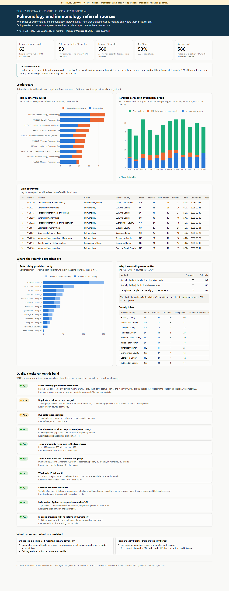

SYNTHETIC DEMONSTRATION - not operational, medical or financial guidance. Coralline Infusion Network, its providers and practices are fictional. Every number comes from generated data (seed
20261024). This is an independent rebuild of a skill area, not an employer deliverable or result.

Open: live dashboard (leaderboard, 12-month trend, provider-county view, counting audit, QA)
1. The business question
Which providers send us pulmonology and immunology/allergy patients, how did that change over the last 12 months, and where are those practices? Sales needs a ranked list it can trust: no provider listed twice, no inflated totals.
2. Fictional business context
Coralline Infusion Network (fictional) receives referrals from about 250 provider records. Some providers carry two specialties, a few exist as two records, and some referrals arrive twice by fax. The window is the 12 full months from Oct 1, 2025 to Sep 30, 2026. October 2026 is partial at the Oct 24 snapshot and is left out.
3. What was real vs what I built here
| On-the-job exposure (self-reported, general terms) | Completed a specialty referral-source reporting assignment involving geographic and provider segmentation. Delivery and use of the report were not verified. |
| Independently built for this portfolio | Fictional providers, the scope and deduplication rules, SQL, an independent Python check, the dashboard, QA and tests. |
4. Data used
| Table | Grain | Trap |
|---|---|---|
providers |
one row per provider record | duplicates share source_identity_key |
provider_specialties |
one row per provider x specialty | joining it multiplies a dual-specialty provider |
referrals |
one row per referral event | referral_type = 'Duplicate' is the same referral received twice |
postal_county_crosswalk |
one row per ZIP x county | ZIP 00150 sits in two counties; use is_primary = 1 |
patients |
one row per patient | home county used only to show why the location definition matters |
5. Definitions
| Item | Rule |
|---|---|
| In scope | Provider person with Pulmonology or Immunology/Allergy on any record, primary or secondary |
| Specialty group | The person's primary specialty, or "PUL/IMM as secondary specialty". Exactly one group per person |
| Referral | Referral event in the window, duplicate faxes excluded |
| Location | County of the referring provider's practice (practice ZIP, primary crosswalk row) - not the patient's home county, not the infusion site |
| Leaderboard | Providers with 1+ referral in the window, ranked by referrals, then distinct patients |
6. Data files
outputs/: leaderboard.csv, monthly_trend.csv, county_distribution.csv, double_count_audit.csv,
scope_providers.csv, qa_results.csv.
7. How it works
| Step | File |
|---|---|
| Deduplicated people, scope, scoped referrals | sql/01_staging.sql |
| Leaderboard | sql/02_leaderboard.sql |
| Zero-filled monthly trend | sql/03_monthly_trend.sql |
| Provider-county distribution | sql/04_county_distribution.sql |
| Shortcut vs deduplicated totals | sql/05_double_count_audit.sql |
| QA, independent Python check, dashboard | run.py |
python tier2/09_specialty_referral_sources/run.py
python -m pytest tier2/09_specialty_referral_sources/tests -q
8. Quality checks
QA_LOG.md: 10 checks (8 pass, 2 warn). tests/ has 7 tests. They prove these points:
- Each person appears once.
- The dual-specialty provider is counted once.
- Duplicate records never rank as their own row.
- The leaderboard, trend and county totals are equal.
- A pure-Python version reproduces every provider's count.
9. The dashboard
Five tiles, the location definition in a call-out above the charts, a top-10 bar chart, the full leaderboard, a stacked monthly trend by specialty group, a provider-county chart split by same-county vs other-county patients, the counting audit and QA.
10. What the synthetic data shows
- 62 provider people are in scope. 53 referred in the window, sending 560 referrals (337 for new patients).
- Concentration: the top 10 sources sent 53% of referrals. One county (Gullwing, SC) holds 152 referrals from 10 providers.
- Pulmonology dominates (378 referrals) over Immunology/Allergy (135). The 7 providers who list PUL/IMM only as a secondary specialty still sent 47. Leaving them out would understate the market.
- Volume grew from 260 referrals (Oct-Mar) to 300 (Apr-Sep), +15%.
- Counting rules move the total: the specialty-bridge shortcut with faxes kept reports 586 (+5%) from 55 "providers". The deduplicated answer is 560 from 53 people.
- Location matters: 33% of referrals came from patients living in a different county than the referring practice.
11. Limitations and next steps
- Primary specialty decides the group. A provider who mostly treats asthma under a primary-care label sits in "secondary".
- Counties are fictional and no map is drawn. The county view is a ranked bar chart.
- Next steps: rolling-90-day active/dormant status for this scope (as in Project A) and a dormant-source outreach list.
Resume-safe (on the job): "Completed a specialty referral-source reporting assignment involving geographic and provider segmentation (self-reported)." Portfolio: "Built a deduplicated referral-source leaderboard, 12-month trend and provider-county view with explicit location and double-counting rules, verified by an independent Python check."